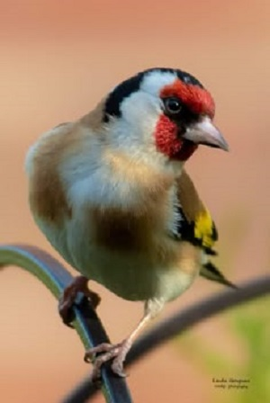

Cane
I cani sono considerati da sempre i migliori amici dell’uomo, bambini compresi. Crescere con un animale domestico come un cane è, per un bambino, una grande opportunità oltre che un’esperienza di vita emotivamente significativa. Nella scelta dei cani da compagnia più adatti alle nostre esigenze dovremmo prendere in considerazione una serie di fattori importanti, come lo spazio a disposizione, le specifiche esigenze dell’animale che decidiamo di adottare e il tempo che saremo in grado di dedicargli. Inoltre ci sono delle razze di cani da compagnia più consigliabili per la convivenza in famiglia e altre meno tolleranti nei confronti dei bambini. Potete trovare qui la nostra guida dedicata alle razze di cani più adatte ai bambini.
Gatto
Esistono tante razze di gatti al mondo, ma spesso ne ignoriamo le principali caratteristiche e peculiarità. In realtà, se state pensando di allevare un gatto in casa, è fondamentale conoscerne i bisogni e le abitudini, perché potreste restare delusi da un gatto troppo indipendente o al contrario bisognoso di coccole.Tra le razze di gatti, quella che si distingue per la sua forte fedeltà è sicuramente la razza del gatto siberiano. Questo felino tende a sviluppare un legame particolare con il suo padrone e si comporta quasi come un cane. Consigliato a chi è allergico ai gatti, ma vorrebbe tanto averne uno in casa, dal momento che il suo mantello è ipoallergenico.
Criceto
Il criceto è diventato un piccolo animale da compagnia molto diffuso e apprezzato in Occidente a partire dal 1930, anno in cui dalla Siria venne portato in Israele e poi in Inghilterra e USA, dove si riprodusse e affermò come animaletto domestico docile e mansueto. E’ uno degli animali domestici e da laboratorio più diffuso in Occidente. Il fatto che il criceto sia diventato molto utilizzato nelle ricerche è dovuto principalmente ai suoi sviluppatissimi sensi. Il criceto è dotato di un udito acuto (i criceti comunicano con gli ultrasuoni oltre che con i classici squittii udibili dall’uomo) e da un incredibile olfatto.
Canarino

Il canarino è un animale da tempo immemore tenuto in casa: richiede tuttavia una scelta oculata della gabbia e della posizione in cui sistemarla. Nonostante sia stato reso nei secoli un animale domestico, resta pur sempre un volatile il cui habitat è l’aria. Ogni soluzione domestica, quindi, lo costringe ad una vita di prigionia. Se proprio si decide di adottare questo uccellino è opportuno conoscerne le principali esigenze etologiche per assicurargli il giusto benessere. La diffusione di questi animali domestici va rintracciata anche nella storia degli Stati Uniti. Nel 1800, infatti, erano adoperati per poter rilevare i gas nocivi all’interno delle miniere di carbone.